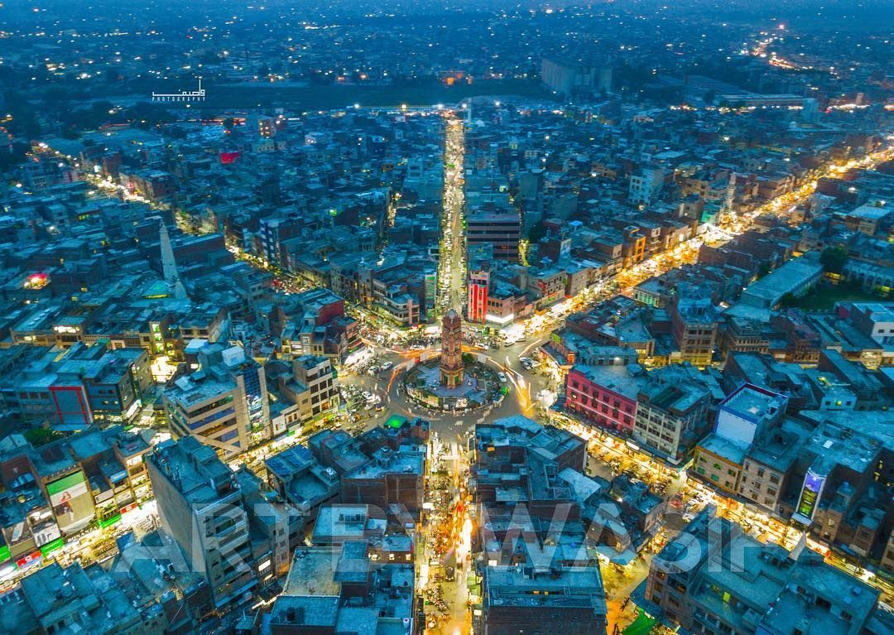
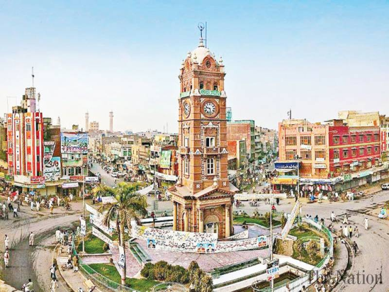

The city of Pakistan :
Faisalabad, formerly known as Lyallpur, named after the founder of the city is the 3rd largest city of Pakistan after Karachi and Lahore respectively, and the 2nd largest city of Punjab after Lahore.Today, Faisalabad is a major industrial hub and its road, rail and air networks allow for easy commute. The city is also known as the “Manchester of Pakistan” in reference to its booming textile industry, which is quite similar to Manchester's.

Faisalabad, formerly (until 1979) Lyallpur, city, east-central Punjab province, Pakistan, in the Rechna Doab upland. The city, the district headquarters, is a distributing centre centrally located in the Punjab plain and connected by road, rail, and air with Multan and Lahore and by air with Lahore and Karachi.
Since 2005, the administration of Faisalabad has been divided into eight tehsil municipal administration areas (TMAs): Lyallpur Town. Madina Town.In 1977, the name of the city was “Faisalabad”, after the late King Faisal of Saudi Arabia to commemorate deep friendship which exists between the two great Islamic countries of the world. In 1985, Faisalabad was upgraded as a division with the districts of Faisalabad, Jhang and Toba Tek Singh.

Chenab Club is an exclusive class social club situated at a bustling region of Civil Lines, Faisalabad. The Chenab Club offers a Variety of activities, including family functions, entertainment, and occasion festivity. Chenab is the name of value and status. The city is also known as the “Manchester of Pakistan” in reference to its booming textile industry, which is quite similar to Manchester's.
Made with By Mr.Haris
Leave a Comment